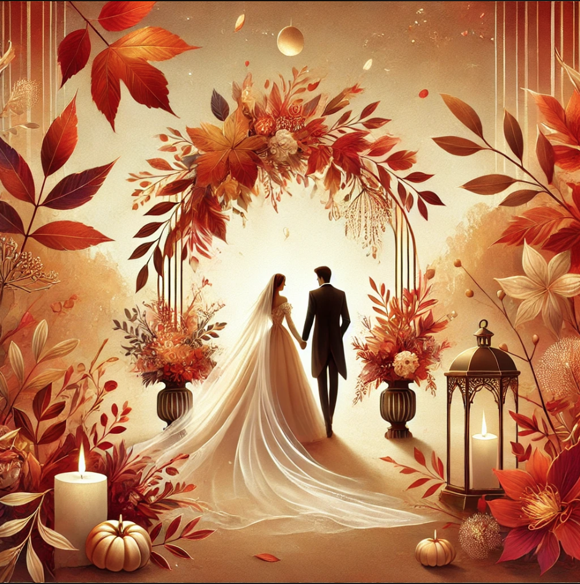
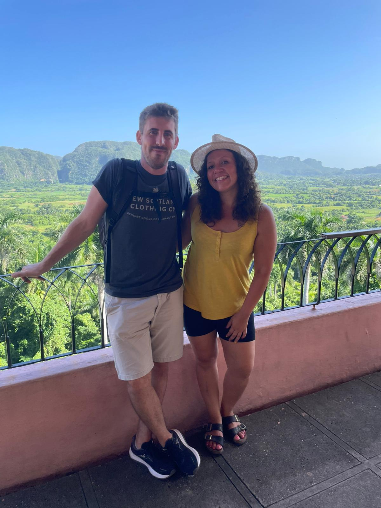
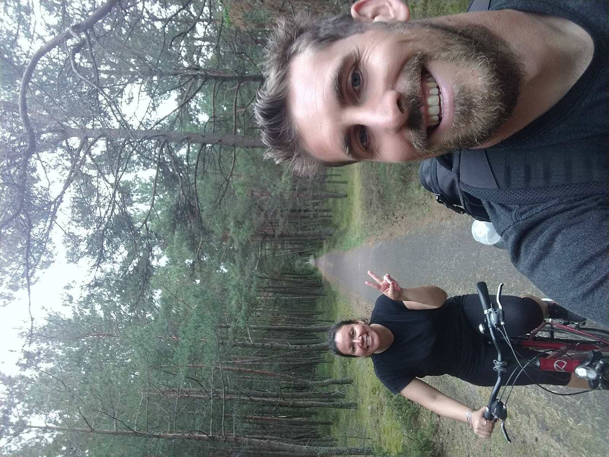
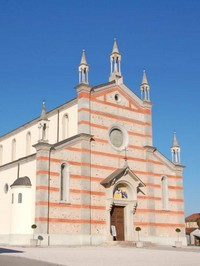
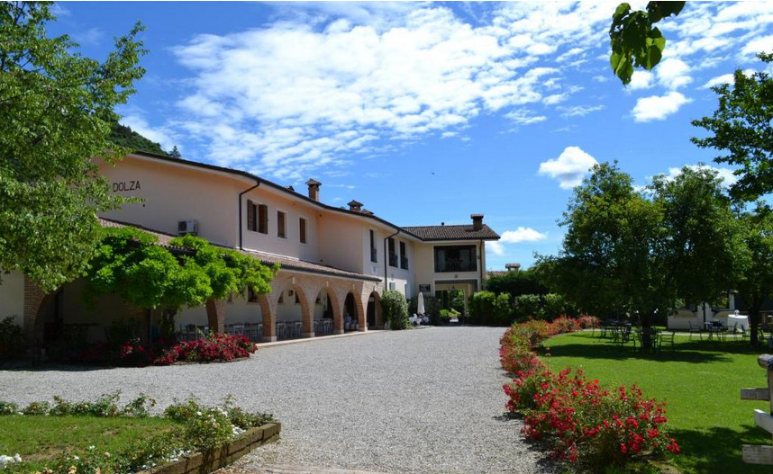

La Nostra Storia
Chi l'avrebbe mai detto che quell'incontro casuale ad un evento universitario di Dicembre ‘12 sarebbe stato il primo passo di un fantastico viaggio insieme?
Indaffarati com’eravamo tra lezioni, esami universitari, feste, volontariato e lavoro, trovammo pure il tempo di conoscerci e piacerci.
Tuttavia, presi com’eravamo da mille impegni e vari soggiorni all'estero, avevamo pure iniziato a misurare la nostra storia tra tempo lordo passato insieme… ed effettivo trascorso almeno nello stesso Paese.
Correva l'anno 2018 e finalmente, terminati tutti gli studi, decidiamo di mettere “la testa a posto” (o almeno così credevamo) e andare a convivere. E vissero felici e contenti?
Non proprio, e non subito!! Neanche il tempo di disfare le valigie che iniziano a fioccare opportunità... dalle trasferte in giro per il mondo (più o meno lunghe) al lasciare la bella e ventosa Trieste per avventurarsi verso territori sconosciuti come il Polesine, riprendere gli studi, e ricollocarsi a Treviso prima e Falzè poi.
Senza dimenticare gli innumerevoli ed immancabili viaggi, le onnipresenti partite di pallavolo, le corse podistiche a tutte le ore ed in qualunque luogo, i festival ed i concerti per sentirsi sempre giovani inside…
Ed ecco il colpo di scena (aka: La Proposta). Dopo tanti anni passati insieme, alcuni in Paesi diversi ma almeno altrettanti condivisi sotto il medesimo tetto, era il momento di rendere ufficiale il tutto.
Tra deadline, sogni e desideri, finalmente la proposta si è materializzata… anche se non proprio come era stata pianificata (maggiori dettagli seguiranno durante l'evento).
Però insomma… ci sposiamo!!
Ora arriva la parte più importante: vogliamo che siate con noi per il grande giorno! Perché senza di voi, la nostra famiglia, i nostri amici, le persone che ci fanno ridere, piangere e arrabbiare, non sarebbe lo stesso.
Ovviamente, dopo la cerimonia, vi aspettiamo per festeggiare come si deve: buon cibo, musica, balli e tanto divertimento. E sì, ci saranno anche momenti imbarazzanti da immortalare per i social (ma niente video durante i brindisi, siamo seri).
Dettagli del Matrimonio
Non vediamo l'ora di festeggiare con voi! 🎉
Volete farci un regalo di nozze originale? Contribuite al nostro Safari Fund 🐘
Luogo della cerimonia (Chiesa)
Luogo del ricevimento (Ristorante)
RSVP
Per favore, confermate la vostra presenza entro il 1 luglio 2025. Potete contattarci via email a nicola.stella90@gmail.com o tramite telefono al 327 1777146.
Info Pratiche
Come arrivare
In auto:
- Da Conegliano (A27 o A28) → seguire per Conegliano e Sernaglia della Battaglia lungo la SS13 per circa 21Km. Percorso suggerito
- Da Treviso Nord (A28) → prendere la SS13 in direzione Nord per circa 23Km. Percorso suggerito
- Da Spresiano (SPV) → prendere la SS13 in direzione Nord per circa 17Km. Percorso suggerito
In treno:
La stazione più vicina è Conegliano, servita da Trenitalia, Italo e OBB. Da lì è possibile proseguire in taxi o con i bus di MOV.
In aereo:
- Aeroporto di Treviso Antonio Canova (TSF) – circa 30 km Posizione
- Aeroporto di Venezia-Marco Polo (VCE) – circa 51 km Posizione
Entrambi gli aeroporti sono collegati con taxi o bus MOV (link).
Dove soggiornare
Altre opzioni disponibili su Booking, Airbnb o nel portale ufficiale Visit Prosecco Hills.
Contatti
Per ogni dubbio, domanda o supporto non esitate a contattarci!
Galleria Fotografica
Scoprite alcuni dei momenti più belli che abbiamo condiviso insieme: